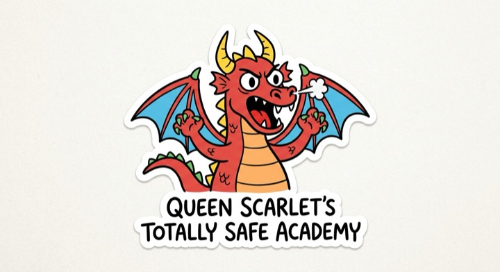
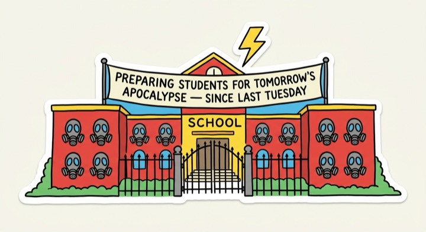
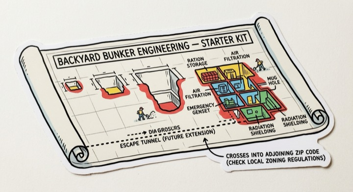
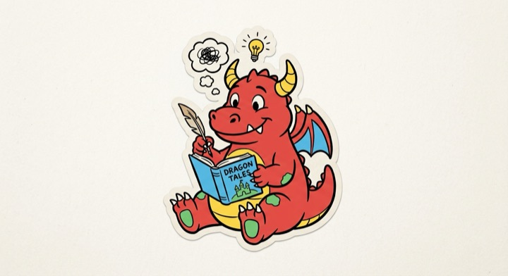
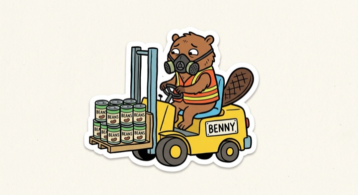
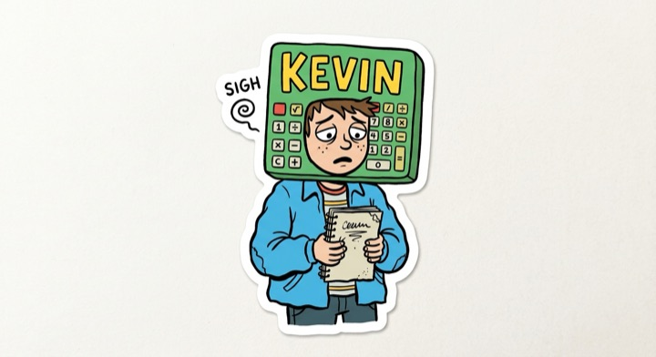
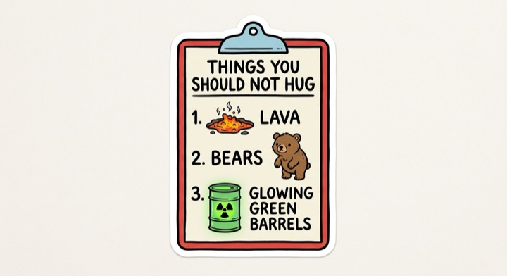
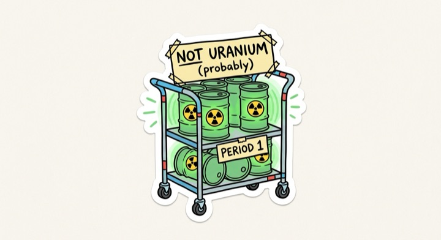
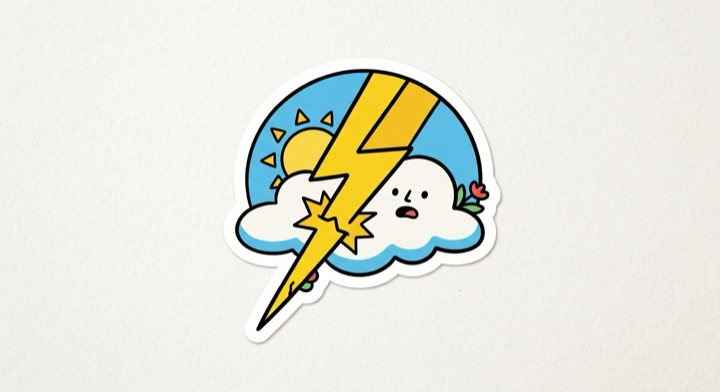

Build your story with wordy first, then come back here to make pictures for each block.
just thinking out loud with wordy. nothing here gets committed to the story unless you say so. ideas worth keeping show up over on the right.